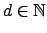

Une équation de Pell est une équation de la forme
où
 n'est pas un carré parfait. Nous cherchons ici, tout comme les Grecs ci-dessus, les solutions entières de cette équation. Attirons l'attention sur le fait que si le problème était de trouver les solutions rationnelles de cette équation, cela ne présenterait pas de grosse difficulté, il suffirait de remarquer que
Cependant lorsque les solutions cherchées sont entières, ce problème devient beaucoup plus délicat et les fractions continues deviennent alors très utiles. On peut montrer que
Donnons l'idée de la preuve de ce fait, en fait nous allons montrer que, avec les notations habituelles, on a
Traitons un exemple, cherchons les solutions entières de
. On trouve facilement que
En fait, une équation de Pell admet une infinité de solutions et on peut générer celles-ci à partir de la solution minimale trouvée avec la méthode ci-dessus. Cela est rendu possible grâce à la règle de composition de Brahmagupta (600 ACN); cette règle affirme que si et sont solutions de l'équation de Pell, alors
Reprenons alors l'exemple précédent, nous avons trouvé que est solution de l'équation
. En composant la solution avec elle-même selon Brahmagupta, nous pouvons générer la suite de solutions suivante,